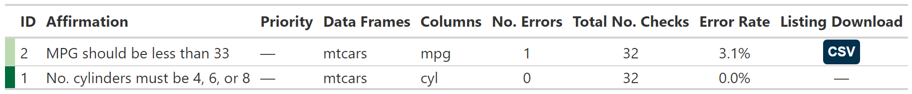

The {affirm} package makes daily affirmation against our data. We use this package to affirm our raw data is as expected, and our derived variables continue to be accurate as data is updated.
Raw EDC Data: Use the affirmation functions to make assertions about the raw EDC data. Report errors back to data management, and in some cases make ‘corrections’ to the data. The issue will still be reported to DM, but these small corrections let us continue our work without dealing with data that should not be present in the data base and simplifies much of our logic downstream.
Derived Variables: Each time we derive a new variable, use data affirmation functions to affirm the derivation continues to be accurate as the data updates. We’ll often use the
affirm_true(error=TRUE)in this setting, which throws an error when our underlying assumptions are not true and will require us to address the issue before continuing.
The {pointblank} is another package that performs data validations. {pointblank} is far more comprehensive than {affirm}, and {affirm} utilizes many of the ideas and reporting introduced in {pointblank} with defaults and reports tailored for the needs of the PCCTC organization. If {affirm} is not a perfect match for you, {pointblank} will likely meet all your validation needs!
Installation
-
Install the most recent release of {affirm} with
devtools::install_github("pcctc/affirm@*release") -
Install from a development branch for testing
devtools::install_github("pcctc/affirm")
Examples
Load the package and initialize a new affirmation session with affirm_init()
library(affirm)
#>
#> Attaching package: 'affirm'
#> The following object is masked from 'package:stats':
#>
#> filter
# initiate an affirmation session
affirm_init(replace = TRUE)
#> ✔ We're ready to make data affirmations...Run the individual affirmations…
as_tibble(mtcars) |>
affirm_true(
label = "No. cylinders must be 4, 6, or 8",
condition = cyl %in% c(4, 6, 8),
id = 1,
data_frames = "mtcars"
) |>
affirm_true(
label = "MPG should be less than 33",
condition = mpg < 33,
id = 2,
data_frames = "mtcars"
)
#> • No. cylinders must be 4, 6, or 8
#> 0 issues identified.
#> • MPG should be less than 33
#> 1 issue identified.
#> # A tibble: 32 × 11
#> mpg cyl disp hp drat wt qsec vs am gear carb
#> <dbl> <dbl> <dbl> <dbl> <dbl> <dbl> <dbl> <dbl> <dbl> <dbl> <dbl>
#> 1 21 6 160 110 3.9 2.62 16.5 0 1 4 4
#> 2 21 6 160 110 3.9 2.88 17.0 0 1 4 4
#> 3 22.8 4 108 93 3.85 2.32 18.6 1 1 4 1
#> # ℹ 29 more rowsCreate a report of the results

About the hex logo
The hex art is a depiction of Plato’s allegory of the cave. Each data table has an ideal form, and the {affirm} package will help us confirm that we are viewing it. Also, “forms”…get it? 😜